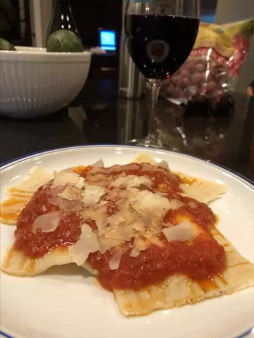

Four Cheese Ravioli

This homemade ravioli recipe includes a pesto-Alfredo sauce and marinara.
I wanted to recreate the ravioli dish that you get at Maggiano's italian
restaurant and it turned out great! Don't be intimidated by the large list
of ingredients, it is well worth it.
Ingredients:
For the dough: All-purpose flour, salt, eggs, water and olive oil
For the filling: Ricotta, Parmesan, mozzarella and provolone cheeses,
an egg and dried parsley
For the sauce: Olive oil, garlic, preepared basil pesto sauce
(you can use store-bought or homemade sauce), heavy cream,
Parmesan cheese and marinara sauce
Directions
1.
Make the dough: Make and knead the dough, then form it into a ball.
Tightly wrap the ball and refrigerate for at least 30 minutes.
2.
Make the filling: Mix the filling ingredients together and set aside.
3.
Make the sauce: Cook the garlic and pesto in oil,
stir in the heavy cream, and bring to a boil. Reduce to a simmer, then
whisk in the Parmesan.
4.
Assemble the ravioli:
Roll out the dough into sheets. Drop cheese filling onto the dough about
an inch apart. Cover with the top sheet of pasta and make a seal around
each portion of filling. Cut out individual ravioli, then seal the edges.
5.
Cook and bake the ravioli: Boil the ravioli in salted water until
the dumplings rise to the top and the filing is hot. Drain well.
6.
Serve the ravioli: Divide the ravioli between bowls, top with the
warmed marinara sauce, then finish with the sauce.